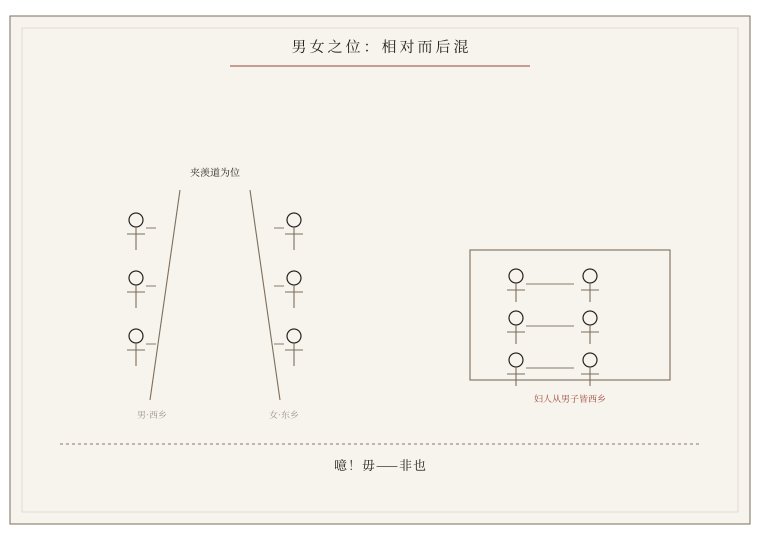

檀弓下 · 四·四十一 · 第 366 课
国昭子之母死，问于子张曰：「葬及墓，男子、妇人安位？」子张曰：「司徒敬子之丧，夫子相，男子西乡，妇人东乡。」曰：「噫！毋。」曰：「我丧也斯沾，尔专之，宾为宾焉，主为主焉，妇人从男子皆西乡。」
说什么事：齐国大夫国昭子的母亲死了，他问子张：下葬到墓时，男子与妇人各站什么位置？子张答：司徒敬子之丧，夫子相礼，男子朝西，妇人朝东。昭子说：「噫！不必。」又说：「我这丧事，人人都在看着；你且主管着——宾按宾位，主按主位，妇人跟着男子，统统朝西。」
落在哪一层：以「位」量礼。论位置的定法，是由礼定，还是由人定。
为何编在此位：上节论晏子之一国，此节论昭子之一家。皆一时之势压过礼。
【经】國昭子之母死，問於子張曰：「葬及墓，男子、婦人安位？」子張曰：「司徒敬子之喪，夫子相，男子西鄉，婦人東鄉。」曰：「噫！毋。」曰：「我喪也斯沾，爾專之，賓為賓焉，主為主焉，婦人從男子皆西鄉。」
【注】國昭子，齊大夫。／夾羨道為位。夫子，孔子也。／噫，不寤之聲。毋，禁止之辭。／斯，盡也。沾讀曰覘。覘，視也。國昭子自謂齊之大家，有事人盡視之，欲人觀之，法其所為。／專猶司也。時子張相。／非也。
【疏】此一节论葬之在圹，男女面位之事。「曰：噫，毋」者，止子张也。子张既相，以男子西乡、妇人东乡，而昭子不悟礼意，乃曰「噫，毋得如是男子西乡、妇人东乡」。既止子张，又自言我居丧也，既是齐之大家，斯，尽也，人尽来觇视于我，当须更为别礼，岂得以依旧礼。／「专犹同也」，尔当同此妇人与男子一处，若妇女之宾为宾位焉，与男子之宾同处，妇女之主为主位焉，与男子之主同处。于是昭子家妇人从男子皆西乡，同在主位，宾之男子及宾之妇皆西厢东乡。言非也。
国昭子 齐国大夫。
安位 在什么位置。所问者面位。
相 相礼，主赞仪节。
西乡 面朝西。乡，向。
噫 注「不寤之声」，醒悟未及而发之叹。
毋 禁止之辞，此为止之。
斯沾 斯，尽也；沾读为觇，视也。谓人人尽来窥视。
尔专之 你主管此事。专，司也。
宾为宾焉，主为主焉 宾各就宾位，主各就主位。
非也 注之断语。此礼为非。
国昭子的母亲死了，他问子张：「下葬到墓时，男子与妇人站什么位？」子张说：「司徒敬子之丧，夫子相礼，男子朝西，妇人朝东。」昭子说：「噫！不必。」又说：「我这丧事，人人都在看着；你只管主持——宾按宾位，主按主位，妇人跟着男子，全朝西。」
此章是一段三句的对话，却把一件事说完：礼位被人改了。
子张举的是成法，昭子断的是「毋」，最后一句是他改定的新位。
注只两个字：「非也。」
第一层 夹羡道为位：一条路的左右 注云「夹羡道为位」。羡道是下棺之通道，位分于其两侧。
男子西乡、妇人东乡，是各据一侧，相对而不相混。
此位之设，义在「别」：男女有别，宾主有别，亲疏有别。一眼看去，便知谁是谁。
第二层 子张之答：举成法 子张不答「应该怎样」，答「从前怎样」：司徒敬子之丧，夫子相，如此如此。
举成法，是礼学的常法：先有例，后有断。
第三层 「噫！毋」：两个字断掉一条礼 注云「噫，不寤之声」——昭子其实未懂，先叹，后止。
而这一止，止的不是某个细节，是一条位的原则。
第四层 斯沾：被看见的压力 昭子把理由说得很坦白：我是齐之大家，人尽来觇视。
注云「欲人观之，法其所为」——他要的不是合礼，是「看起来像大家」。
此语是全章的关键：当「被看见」成了理由，礼就从「应该」变成了「好看」。
第五层 妇人从男子皆西乡：位的取消 他改定的结果是：宾为宾、主为主，妇人从男子，皆西乡。
看似只是把妇人挪到男子一边，实则取消了「别」这一整套。
位一混，则宾主之别、男女之别、亲疏之别，皆无所附。故注断曰「非也」，不加一辞。
与今日何干 今之典礼、会议、宴席，座位之设，多有为「好看」「上镜」「显得热闹」而改者。
此节给一条尺：位之所以设，是为了让人知道自己在哪；若为观者改位，则在场者反而不知所在。
| 左 | 右 |
|---|---|
| 夹羡道为位 | 分于通道两侧 |
| 男子西乡 | 成法 |
| 妇人东乡 | 成法 |
| 噫 | 不寤之声 |
| 毋 | 止之 |
| 斯沾 | 人尽来视 |
| 尔专之 | 你主管 |
| 宾为宾主为主 | 各就各位 |
| 皆西乡 | 位之取消，非也 |
画一条自下向上的通道（以两条平行的长线示意），通道两侧各画一排人形，左侧三人面朝右，右侧三人面朝左，相对而立，两排之间留着通道。画面右上方另画一幅较小的同类图，通道两侧的人形全部面朝右，右排亦朝右，示改动之后的样子。两图之间不画连线。赭色只用在小图上那一排朝右的人形的肩线。
